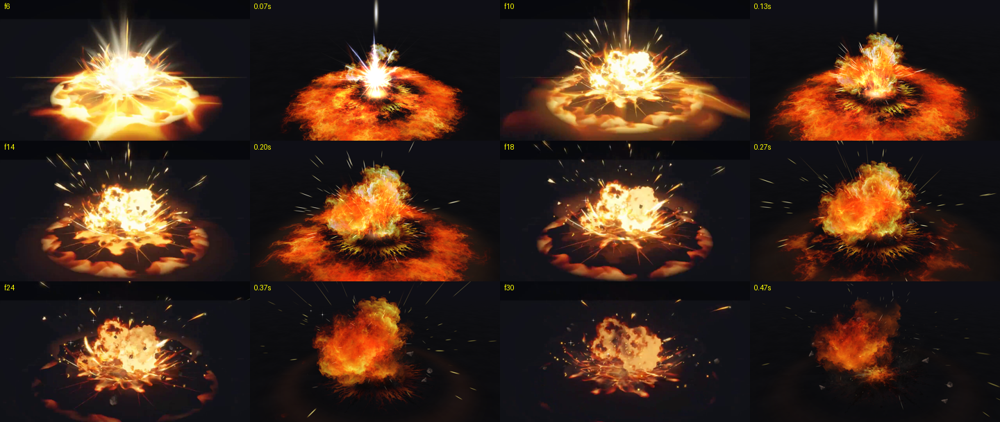

쏘는 곳에만 마법진 → 마법진 입구에 꽉 찬 불덩이가 입구 분출(앞으로 뿜는 불·충격파 고리)과 함께 짧은 꼬리를 달고 곧게 날아감 → 허수아비 발밑 땅에 맞아 37층 폭발(레퍼런스와 같은 층 구성: 번쩍임 6·땅 8·고리·그릇·컵 모양 메시 10·불덩이·연기 5·작은 입자 8).
허수아비 발밑에 마법진이 깔리고 금빛 불씨가 떠오름 → 땅을 치는 번쩍임과 함께 금빛 불기둥(위로 흐르는 불 무늬 원통 두 겹 + 하얀 속심이 있는 꼬인 빛줄기 520가닥 + 솟는 불꽃)이 화면 위까지 솟구침 → 바닥에 번개 같은 금빛 균열 → 꺼진 뒤 타는 허수아비.
하늘 마법진 입구에서 큰 불덩이 운석이 충격파와 함께 연달아 뿜어져 나옴 → 땅에 맞을 때마다 37층 폭발 → 그을린 균열과 연기가 남음.

그림 재료 가공(디아블로 3·라이엇·Real Time VFX 포럼에서 쓰는 방법): 불·연기 그림 한 장을 그대로 띄우지 않고, 노이즈 무늬를 크기 2배 간격으로 서로 다른 속도로 흘려 곱하고, 사라질 때는 가장자리부터 갉아먹히며 빨갛게 식게 함. 원통 모양 불(불기둥 몸통·폭발 컵 불)은 이음매 없는 세로 불줄기 무늬를 위로 흘리고, 옆에서 볼 때 가장자리가 네모로 끊기지 않게 비스듬한 면일수록 흐리게 함.
만든 도구: Unity 6(6000.0.85f1, 무료 개인판) + URP 렌더 파이프라인(번짐 빛·Neutral 색 보정·부드러운 파티클). 셰이더: Excifroge VFX Essential Shader(MIT 라이선스, https://github.com/excifroge/VFX-Essential-Shader) 원본에 색 사다리(밝기→불 색) 기능을 덧붙여 씀. 그림 재료: 마법진·룬 고리·불꽃 시트와 불덩이·연기·균열 등은 Codex 이미지 생성(OpenAI, 약관상 결과물 소유·상업 사용 가능), 나머지 몇 장은 코드로 만듦. 레퍼런스 Excifroge 불 폭발과 같은 시각 장면을 나란히 놓고 맞춤.